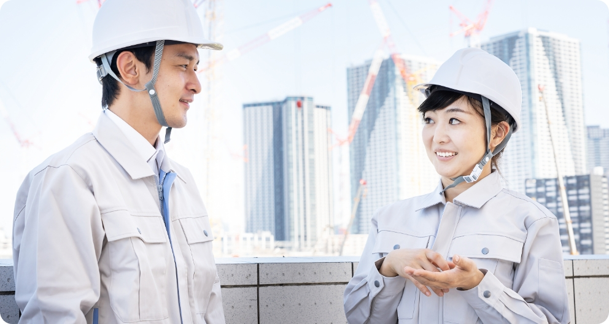

旭化成アミダスの製造現場の
お仕事について
製造現場業務のしくみ
製造現場のアウトソーシングを行っている旭化成アミダスは旭化成と業務委託契約を締結し、工場内の一部の工程における業務全般を管理・運営しています。製造工程で発生する周辺作業や製品の加工、製造に関わる部品の整備、品質検査、物流業務など、ご用意できるフィールドは多岐に渡ります。
旭化成アミダスで働くメリット
旭化成グループは、人々の生活に必要不可欠な製品を数多く世の中に送り出しています。私たち旭化成アミダスも、その一翼を担っている事が仕事をする上で大きなモチベーションとなります。職場の安全対策がしっかりと取られた労働環境で、社員の成長をサポートする様々な仕組みがあり、長く腰を据えて働くことができる条件が整っている事が大きな特徴と言えます。
-
メリット
あなたの成長をサポート
入社時には旭化成の訓練センターでVRによる危険体感や安全運転適性検査の実施、５S手法（整理・整頓・清掃・清潔・躾）を用いた改善方法等、統一の教育プログラムにより製造現場で働く上で必要となる基本的な安全知識を習得して頂きます。現場配属後はOJT教育を中心に選任の教育担当が業務の習得状況を把握し、独り立ちできるまで、しっかりサポートします。


-
メリット
充実した教育制度
社員の各階層別に教育研修を実施することで、職階ごとに求められる能力・業務範囲を明確にし、上位職階を目指す上での必要なスキルを身に着けます。また、様々な分野で活躍される講師を招き、全従業員を対象とした安全研修も毎年実施しています。自己啓発においては、個人が目標として設定した資格に合格した際には、受験料補助や祝金の支給など、成長を支援する制度があります。
 -
メリット
コンプライアンスを遵守
旭化成グループはコンプライアンスを重視し、事業を遂行するにあたり関連する法令・諸規則や社内ルールの遵守を徹底しています。コンプライアンス教育や情報セキュリティ教育を定期的に実施することで、旭化成グループの理念に基づく共通の価値観を養います。また、労働時間は1分単位で細かく管理。着替えや作業場までの移動時間も労働時間として扱うなど、適正な労務管理に努めています。


-
メリット
自在に描けるキャリアプラン
当社の人事処遇制度は、本人の希望と能力評価、担当業務の範囲・難易度、責任の範囲により、管理職候補コース（勤務地限定）や総合職コースへステップアップできる仕組みがあります。


募集中求人・お問い合わせはこちら
あなたも旭化成グループの一員として、
製造をサポートしませんか？
お電話でのお問い合わせも受け付けています。
-
守山事業所
TEL : 0120-85-4622（旭化成アミダス守山事業所採用担当宛）
※受付時間: ～（土日祝除く） -
日向事業所
TEL : 0982-55-2014（旭化成アミダス日向事業所採用担当宛）
※受付時間: ～（土日祝除く）